READ THE ANSWER
答案广场
这个问题，现在知道什么？
以议题为中心，看当前答案、适用条件、社区经验和还缺少的依据。
看答案，也补一份经历 →从一份具体经历出发，让看山整理条件、提出下一问，再由人核对依据，让答案长出新的一页。
在线版在当前浏览器保存操作，以虚构教学样例和确定规则展示流程。未连接真实模型、知乎登录或远程社区；清除网站数据会重置体验，不支持跨设备同步。下方截图与功能讲解来自本地完整版本；在线版对应流程采用浏览器演示数据。
下载 PDF 功能手册 ↗这份手册说明每个主要入口怎么用、操作后发生什么，以及当前版本的真实范围。配图来自同一独立演示空间的不同操作阶段，示例人物、经历和讨论均为演示素材；记录数量会随操作变化。
同一个问题，会在不同页面留下不同的记录。
这个问题，现在知道什么？
以议题为中心，看当前答案、适用条件、社区经验和还缺少的依据。
看答案，也补一份经历 →我提供过什么材料？
以自己的贡献为中心，收好经历、评论和参考来源，查找、查看整理结果或管理公开展示。
打开个人贡献档案 →接下来核对什么？
以答案的研究进展为中心，查看待验证问题、下一问、修订建议和版本变化。
核对建议，追踪答案变化 →顶部三个入口负责切换网页；写贡献、核对来源、审核差异等局部任务仍使用窗口。两个页面里看到相同的议题名称，是因为材料属于同一问题；个人贡献正文和答案研究进展分别展示。
建议第一次选择“和看山体验完整流程”，可以同时体验贡献与维护者审阅。
右上角“加入我们” → “和看山体验完整流程”。如果已经是演示维护者，可以直接继续。
两种演示身份有什么不同？先读广场答案，再看“我的经历”的四份示例，最后打开“看山的小本子”。这时最容易看清个人输入和研究进展的区别。
在广场打开想补充的议题，点“我也经历过”，写下具体情境或填入演示经历。选公开身份 → 检查公开预览 → 勾选确认保存。“我的经历”的“写一份新贡献”也可以继续补充当前议题。
查看公开预览与贡献管理打开看山的下一问，核对正文与依据，预览后确认发出。进入广场的“下一问与后续回复”，在已送达的问题下输入一条具体回复。
查看提问与回复的完整路径打开小本子中的待审修订，对比原文、建议和来源；勾选核对后采纳，再到版本历史看新旧答案。演示空间已经准备一份样例修订，也可以在来源中另选证据生成新建议。
查看修订和版本说明围绕一个议题，把当前答案、不同经历和仍待验证的条件放在一起。
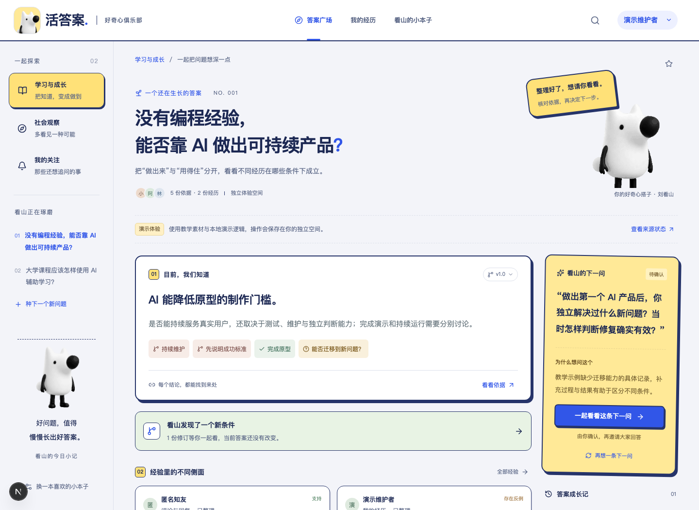
左侧分类与议题列表切换内容；右上放大镜搜索已有议题。点问题旁的星星关注，再用“我的关注”查看收藏的议题。
“目前，我们知道”显示已确认答案。点击支持、反例或待验证标签，打开对应依据；“看看依据”展示全部来源。
“看山的下一问”解释为什么要问；“经验里的不同侧面”展示贡献；“还想一起弄明白”保留尚不能下结论的条件。
关注与视觉偏好保存在当前浏览器。这里的关注是方便再次找到议题的收藏功能，本版没有消息推送。
这是你的贡献档案：关心“我写了什么、放在哪里、现在是什么状态”。
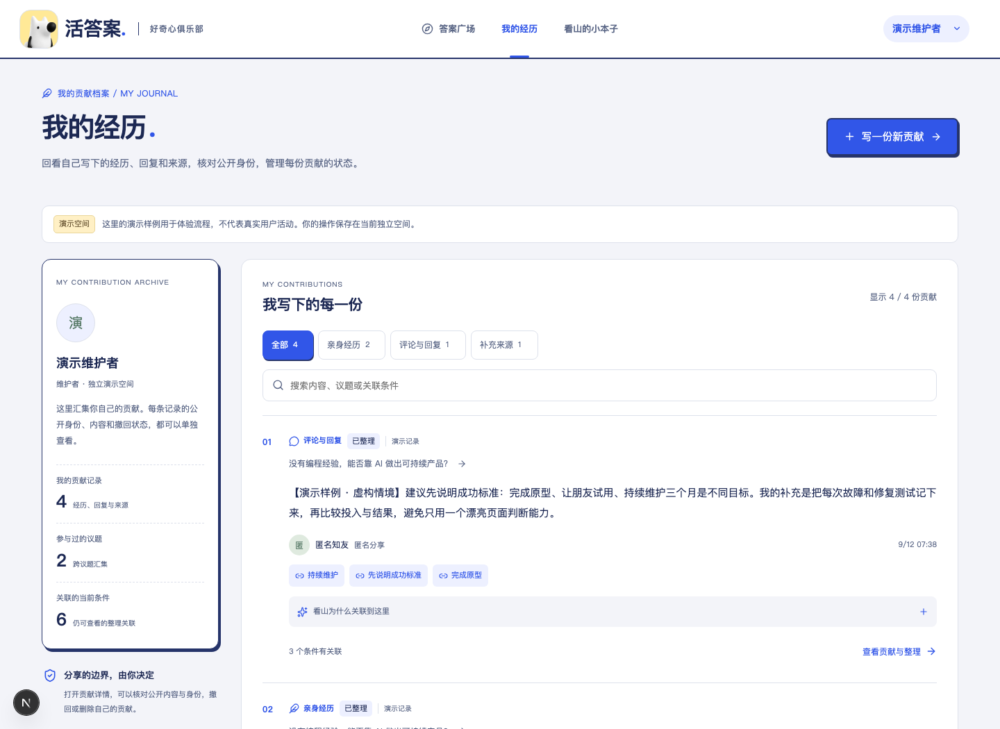
这是研究与审阅的工作台：关心“还有什么没弄明白、下一步该核对什么”。
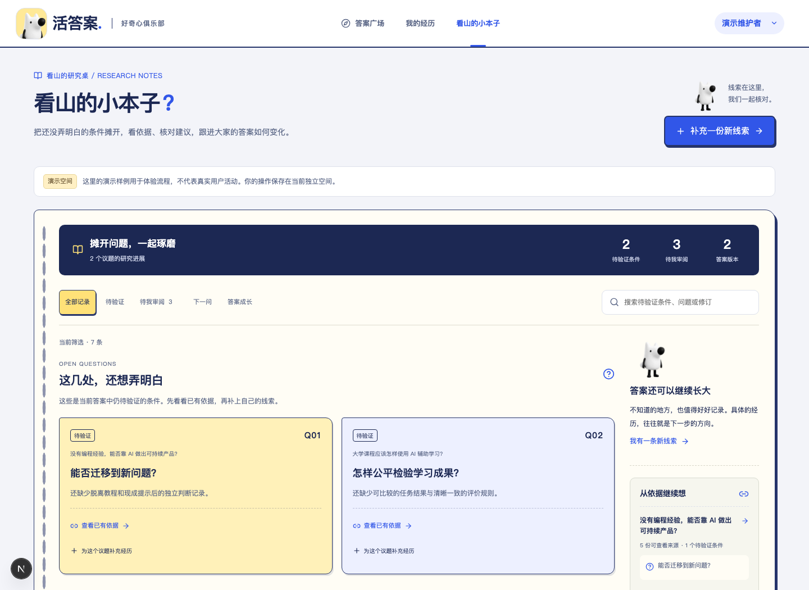
暖色纸张、打孔笔记和深蓝进展摘要，让它与个人贡献日志形成清楚区别。使用“待验证”“下一问”“答案成长”等记录筛选及搜索定位问题；维护者另可筛选“待我审阅”。待审建议只是在等待人的判断，“稍后再看”和“不采纳”都会保留当前答案。
先让你确认要公开的内容，再交给看山整理。
新增贡献 → 选择类型与身份 → 检查公开预览 → 勾选确认 → 保存并整理

昵称：使用当前账号显示名称。
匿名：公开显示“匿名知友”。
化名：为这次贡献填写一个 2–24 字的名字。
公开身份按每次贡献选择，不需要为了换署名退出账号。
系统会尝试隐藏常见手机号、邮箱和身份证号，并提示检测结果。它不能保证识别所有隐私信息。
姓名、地址、学校、工作单位、具体情境等仍需要你自行检查。公开前可以返回修改。
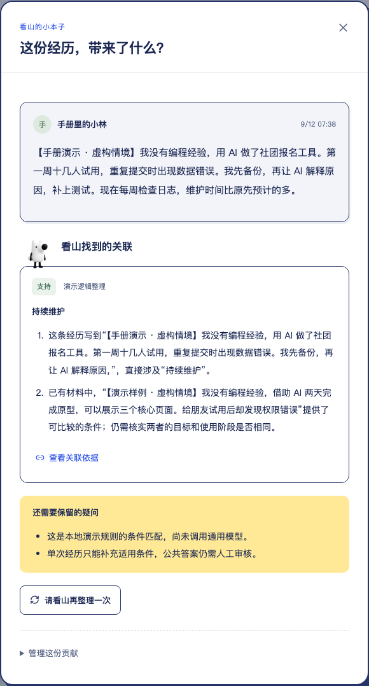
把“尚不知道”变成能被具体经历回答的问题。
广场“看山的下一问”或小本子对应记录 → 查看提问理由、待验证条件和依据 → 编辑正文与公开身份 → “预览后再决定” → 勾选确认并发出。也可以展开“暂时不发出这条问题”，选择稍后再看或不采纳。
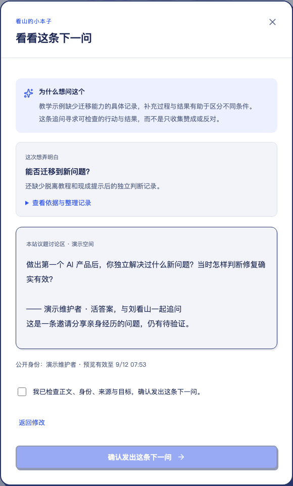
广场“下一问与后续回复” → 找到已送达的问题 → “回答这条下一问” → 输入具体回复 → 检查公开预览并保存。回复会保留它回应的问题，在该问题下展示，也进入自己的贡献记录。
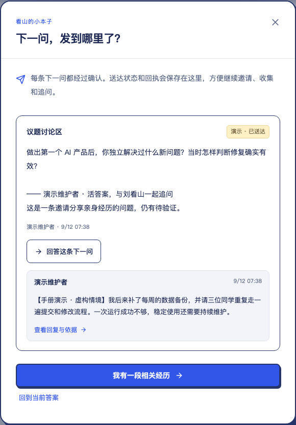
答案怎么变、为什么变、由谁确认，都有来处。
在广场点“看看依据”，或从小本子进入对应议题的来源。阅读摘要、作者和来源状态，勾选“用于修订”，再点击“根据选中的 N 份证据提出修订”。
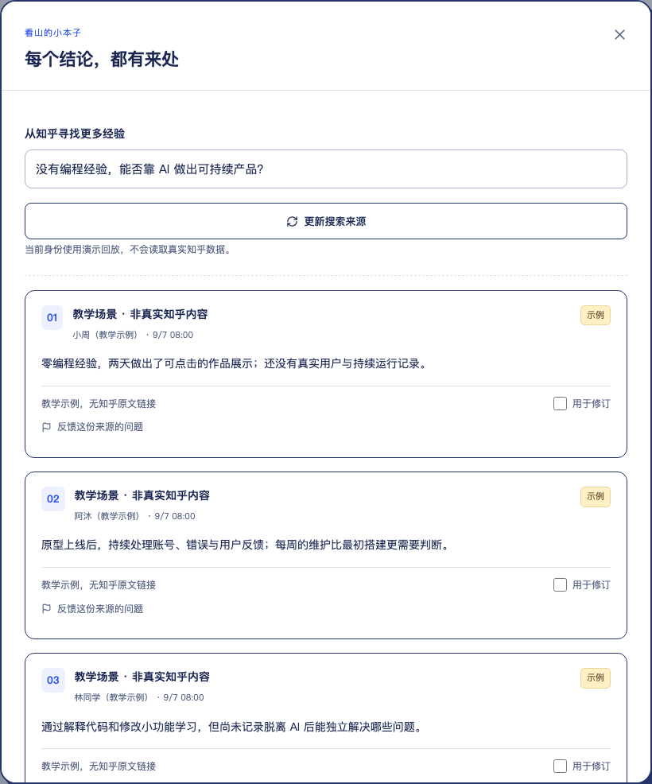
打开待审修订，逐项比较“原来”和“建议改为”，查看新增、修改或移除的理由及引用。必要时展开新版本全文。核对后勾选确认，可填写审阅备注，再采纳、暂缓或不采纳。

采纳后，公共答案更新为新版本；从版本号、广场“答案成长记”或本子中的版本记录，可以回看各版全文、条件、贡献署名、审阅人和时间。点击历史条件还能追溯其依据。
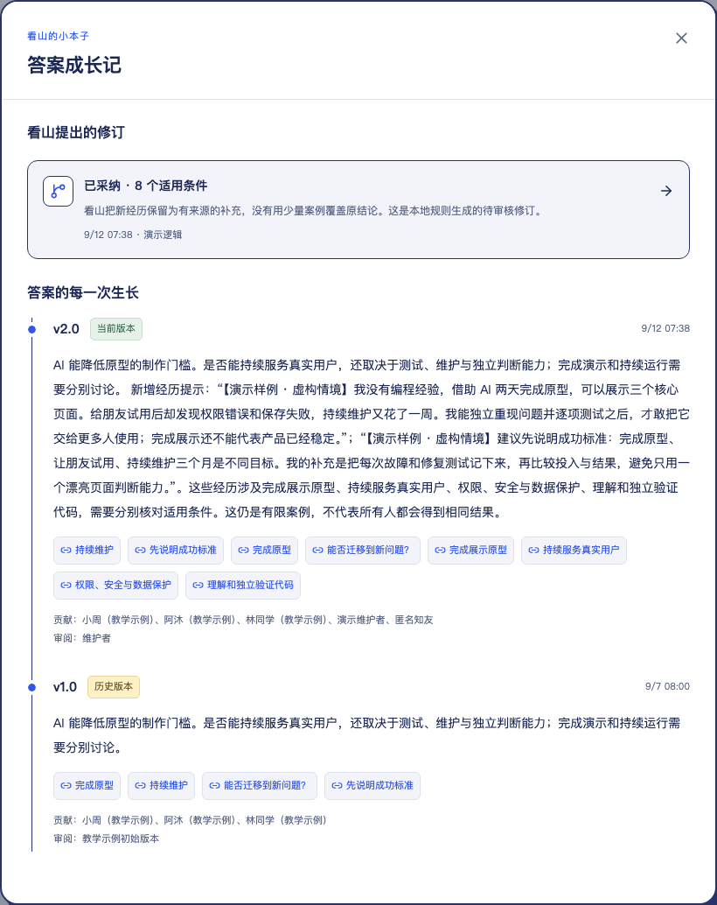
先寻找值得继续讨论的材料，再由人决定问题怎么问。维护者
广场“种下一个新问题” → 搜索 / 看当前热点 → 选择来源 → 编辑问题与类型 → 创建
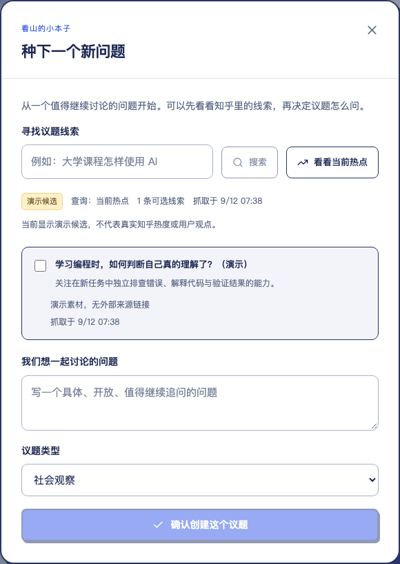
至少选择一条候选来源，填写具体、开放的问题，选择“学习与成长”或“社会观察”。创建后进入该议题，继续收集经历、整理依据与答案。
在来源面板输入搜索词，点“更新搜索来源”。系统保存新增资料、跳过重复项；失败时保留之前取得的内容。
查询失败时会保留上次结果、已选线索和问题草稿，并明确提示上次查询；“重试这次查询”继续失败的那次请求。演示身份的搜索和热点始终使用本地回放。
贡献者负责自己的材料，维护者负责公开问题与答案的审阅。
| 操作 | 访客 | 贡献者 | 维护者 |
|---|---|---|---|
| 查看公开答案、依据与版本 | 可以 | 可以 | 可以 |
| 提交经历、评论、来源 | 需登录 | 可以 | 可以 |
| 管理自己的贡献 | — | 可以 | 仅自己的 |
| 回答已送达的下一问 | 需登录 | 可以 | 可以 |
| 创建议题、更新搜索来源 | — | — | 可以 |
| 审阅下一问、发布答案新版本 | — | — | 可以 |
| 提交内容反馈 | 需登录 | 可以 | 可以 |
| 处理反馈、查看操作记录 | — | — | 可以 |
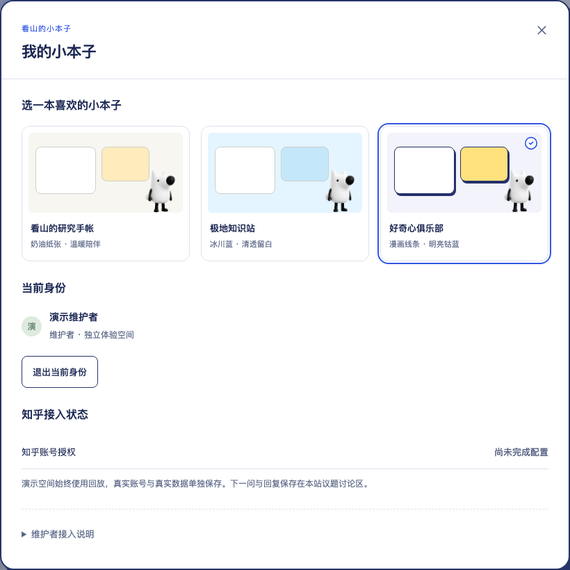
“加入我们”中，“和看山体验完整流程”创建演示维护者；“以经验贡献者身份体验”创建普通贡献者。每次创建独立空间。
右上角身份 → “退出当前身份”。刷新仍使用有效的当前会话；退出后重新进入演示会创建新空间，不会自动找回之前那一轮体验。
打开来源／贡献详情 → “反馈这份内容的问题”，说明具体问题后提交。反馈进入维护者审核流程。
广场右侧“内容反馈” → 查看待处理项 → 填写处理说明 → 隐藏相关内容，或保留内容并结束审核。
广场右侧“操作记录”查看贡献、整理、下一问、发送、修订、撤回与审核等已经保存的流程事件。
查找来源、整理经历、等待审阅、更新答案时，形象和提示随操作变化。失败提示会保留已保存内容，提供相应恢复入口。
三个顶层入口保留，长内容按单列顺序阅读。
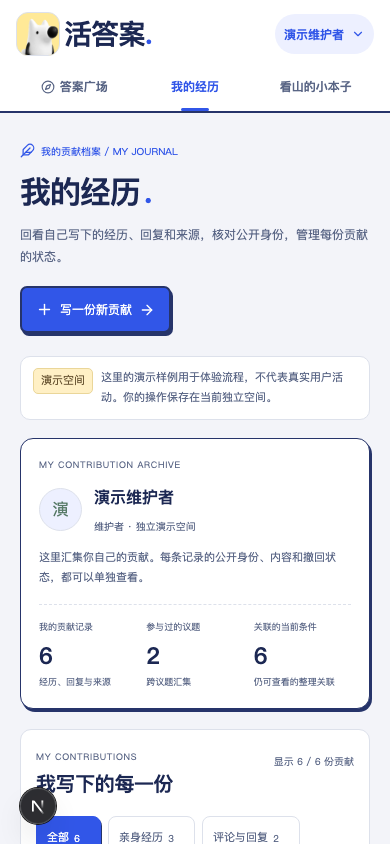
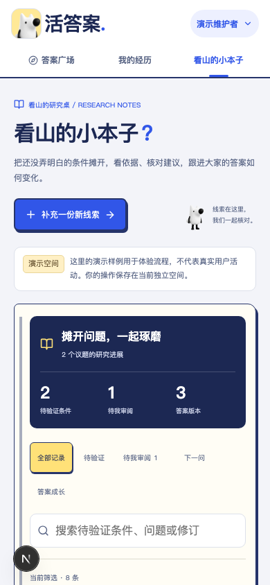
广场在窄屏通过“切换议题”选择问题；“我的经历”和“看山的小本子”继续保留各自的页面内容。这两张图拍于新增一份经历、一条回复并采纳样例修订之后，因此有 6 份贡献、两个议题共 3 个答案版本，与前面初始截图的数量不同。
能用的本地流程、演示素材和待完成的真实接入，分别说明。
| 能力 | 当前状态 | 这对体验意味着什么 |
|---|---|---|
| 三页导航与交互 | 本地可用 | 独立页面、筛选、搜索、来源详情、公开预览、审阅窗口和版本浏览已实现。 |
| 贡献与讨论存储 | 实际保存 | 演示空间里的新增贡献、确认发问、实际回复、审核决定和版本会保存；刷新继续读取当前空间。 |
| 初始演示数据 | 明确标注 | 首次进入个人页准备四份虚构贡献，跨两个议题；维护者另有样例修订。不会反复补回已删除的示例。 |
| 演示中的看山整理 | 本地演示逻辑 | 展示“经历 → 条件 → 下一问 → 修订”的交互和数据流。本轮截图不代表真实模型调用。 |
| 知乎搜索与热点 | 独立调用有验证 | 此前真实搜索和热榜已单独读取成功；演示角色始终使用回放，网页真实数据全链仍需验收。 |
| 真实模型完整流程 | 尚未完成验收 | 一次真实追问已成功；经历分析、修订仍有格式或限流问题待解决，不能据此宣布真实 AI 全链完成。 |
| 知乎账号登录 | 待官方授权联调 | 授权入口与流程已准备，真实账号身份和回调尚待验收。当前可先使用明确标记的演示身份。 |
| 下一问发布位置 | 本站讨论区 | 本届没有圈子能力。本站讨论与回复不冒充知乎圈子帖子或知乎原生评论。 |
| 公网演示链接 | GitHub Pages 演示 | 在线版提供浏览器交互演示，记录仅保存在当前浏览器；部署演示不代表已完成赛事报名。 |
它们是首次进入个人页时添加的演示样例，用于体验经历、评论与来源的完整流程，正文明确标注“演示样例 · 虚构情境”。之后你新增的贡献会与这些样例一起出现在当前空间。
建议要经过维护者核对和确认。它可能尚未审阅、被暂缓或不采纳；材料过期或依据不可用时，还需要重新核对。只有采纳修订才会发布新版本。
本版的看山通过整理贡献、关联条件、提出下一问和建议修订协作。操作围绕议题与证据展开，没有自由对话聊天窗口。
本在线版无需启动本地服务。数据仅保存于当前浏览器；刷新会保留当前体验，清除该网站数据会重置。退出演示后重新选择身份，会新建演示空间。请使用虚构资料体验，不要填写敏感信息。
先读一个问题，补一份具体材料；再沿着依据与未知，看看答案是如何一点点改变的。
回到活答案，开始体验 ↗在线演示地址：https://violetloveai.github.io/zhihu-live-answers/